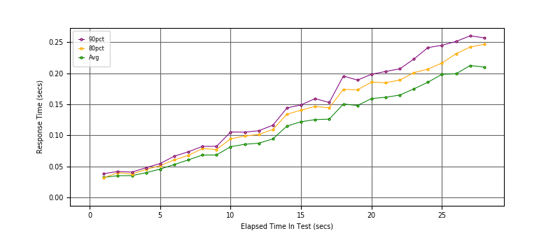
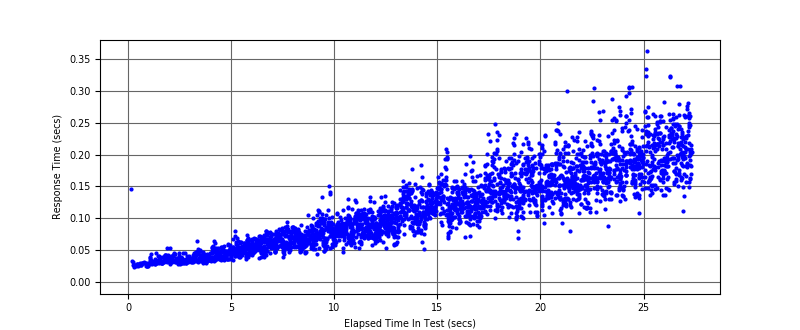
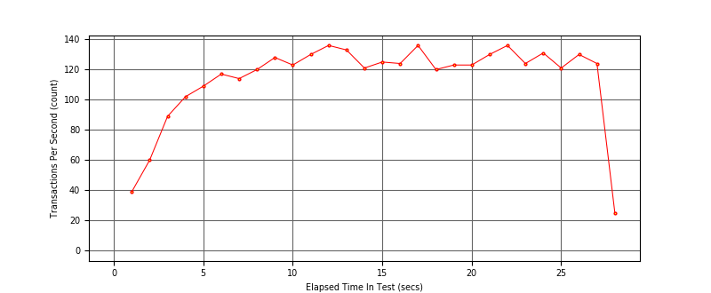

Performance Results Report
Summary
transactions: 3253
errors: 0
run time: 60 secs
rampup: 60 secs
test start: 2018-07-23 10:18:01
test finish: 2018-07-23 10:18:28
time-series interval: 1 secs
workload configuration:
| group name | threads | script name |
|---|
| user_group-1 | 60 | v_perf.py |
All Transactions
Transaction Response Summary (secs)
| count | min | avg | 80pct | 90pct | 95pct | max | stdev |
|---|
| 3253 | 0.024 | 0.119 | 0.173 | 0.201 | 0.225 | 0.362 | 0.060 |
Interval Details (secs)
| interval | count | rate | min | avg | 80pct | 90pct | 95pct | max | stdev |
|---|
| 1 | 39 | 39.00 | 0.024 | 0.033 | 0.032 | 0.038 | 0.044 | 0.146 | 0.019 |
| 2 | 60 | 60.00 | 0.028 | 0.035 | 0.040 | 0.042 | 0.045 | 0.054 | 0.006 |
| 3 | 89 | 89.00 | 0.029 | 0.035 | 0.038 | 0.041 | 0.044 | 0.046 | 0.004 |
| 4 | 102 | 102.00 | 0.030 | 0.040 | 0.045 | 0.048 | 0.053 | 0.064 | 0.006 |
| 5 | 109 | 109.00 | 0.033 | 0.046 | 0.051 | 0.055 | 0.058 | 0.067 | 0.007 |
| 6 | 117 | 117.00 | 0.036 | 0.053 | 0.061 | 0.066 | 0.069 | 0.080 | 0.008 |
| 7 | 114 | 114.00 | 0.038 | 0.061 | 0.068 | 0.074 | 0.076 | 0.080 | 0.009 |
| 8 | 120 | 120.00 | 0.040 | 0.068 | 0.079 | 0.082 | 0.086 | 0.095 | 0.011 |
| 9 | 128 | 128.00 | 0.046 | 0.068 | 0.077 | 0.082 | 0.089 | 0.105 | 0.011 |
| 10 | 123 | 123.00 | 0.045 | 0.082 | 0.094 | 0.105 | 0.112 | 0.152 | 0.019 |
| 11 | 130 | 130.00 | 0.048 | 0.086 | 0.099 | 0.105 | 0.113 | 0.130 | 0.015 |
| 12 | 136 | 136.00 | 0.054 | 0.087 | 0.101 | 0.108 | 0.114 | 0.133 | 0.016 |
| 13 | 133 | 133.00 | 0.054 | 0.094 | 0.109 | 0.116 | 0.120 | 0.135 | 0.017 |
| 14 | 121 | 121.00 | 0.073 | 0.115 | 0.134 | 0.144 | 0.149 | 0.177 | 0.021 |
| 15 | 125 | 125.00 | 0.052 | 0.122 | 0.141 | 0.149 | 0.155 | 0.184 | 0.022 |
| 16 | 124 | 124.00 | 0.069 | 0.125 | 0.147 | 0.159 | 0.180 | 0.208 | 0.028 |
| 17 | 136 | 136.00 | 0.071 | 0.126 | 0.144 | 0.153 | 0.168 | 0.197 | 0.022 |
| 18 | 120 | 120.00 | 0.101 | 0.150 | 0.174 | 0.196 | 0.222 | 0.248 | 0.031 |
| 19 | 123 | 123.00 | 0.069 | 0.148 | 0.173 | 0.189 | 0.198 | 0.232 | 0.030 |
| 20 | 123 | 123.00 | 0.103 | 0.159 | 0.186 | 0.198 | 0.210 | 0.225 | 0.029 |
| 21 | 130 | 130.00 | 0.093 | 0.161 | 0.185 | 0.203 | 0.228 | 0.250 | 0.031 |
| 22 | 136 | 136.00 | 0.081 | 0.165 | 0.189 | 0.207 | 0.221 | 0.299 | 0.031 |
| 23 | 124 | 124.00 | 0.110 | 0.175 | 0.201 | 0.223 | 0.234 | 0.305 | 0.036 |
| 24 | 131 | 131.00 | 0.088 | 0.185 | 0.207 | 0.241 | 0.260 | 0.291 | 0.037 |
| 25 | 121 | 121.00 | 0.108 | 0.198 | 0.216 | 0.245 | 0.296 | 0.362 | 0.043 |
| 26 | 130 | 130.00 | 0.136 | 0.199 | 0.231 | 0.251 | 0.259 | 0.282 | 0.035 |
| 27 | 124 | 124.00 | 0.111 | 0.212 | 0.242 | 0.260 | 0.276 | 0.324 | 0.039 |
| 28 | 25 | 25.00 | 0.150 | 0.210 | 0.247 | 0.257 | 0.261 | 0.265 | 0.035 |
Graphs
Response Time: 1 sec time-series

Response Time: raw data (all points)

Throughput: 5 sec time-series
